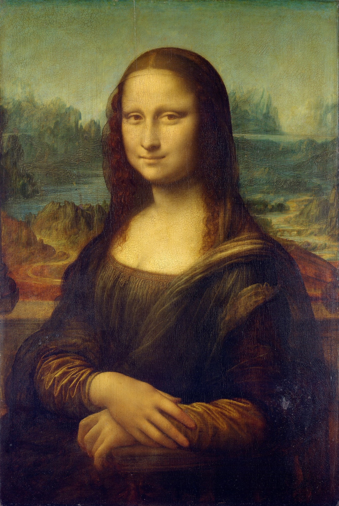
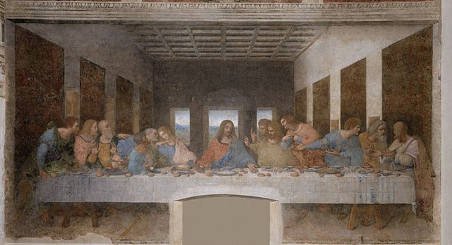

This is a Virtual Art Exhibition by Dev_Ops Organization.
The exhibition comprises various art peices by
various famous artists.
The Starry Night by Vincet van Gogh

The Starry Night is an oil-on-canvas painting by the Dutch Post-Impressionist painter Vincent van Gogh. Painted in June 1889, it depicts the view from the east-facing window of his asylum room at Saint-Rémy-de-Provence, just before sunrise, with the addition of an imaginary village.
The Mona Lisa by Leonardo do Vinci
The Mona Lisa is a half-length portrait painting by Italian artist Leonardo da Vinci. Considered an archetypal masterpiece of the Italian Renaissance, it has been described as "the best known, the most visited, the most written about, the most sung about, [and] the most parodied work of art in the world".
The Starry Night by Leonardo Do Vinci
For more than 500 years of its existence, the famous fresco The Last Supper has been restored at least five times, and the last restoration took 21 years. This fresco by the great Leonardo depicts Jesus' last supper before his betrayal, arrest and death. In addition to composition, shapes and colors, discussions of this fresco are replete with theories about hidden symbols and the presence of Mary Magdalene next to Jesus.